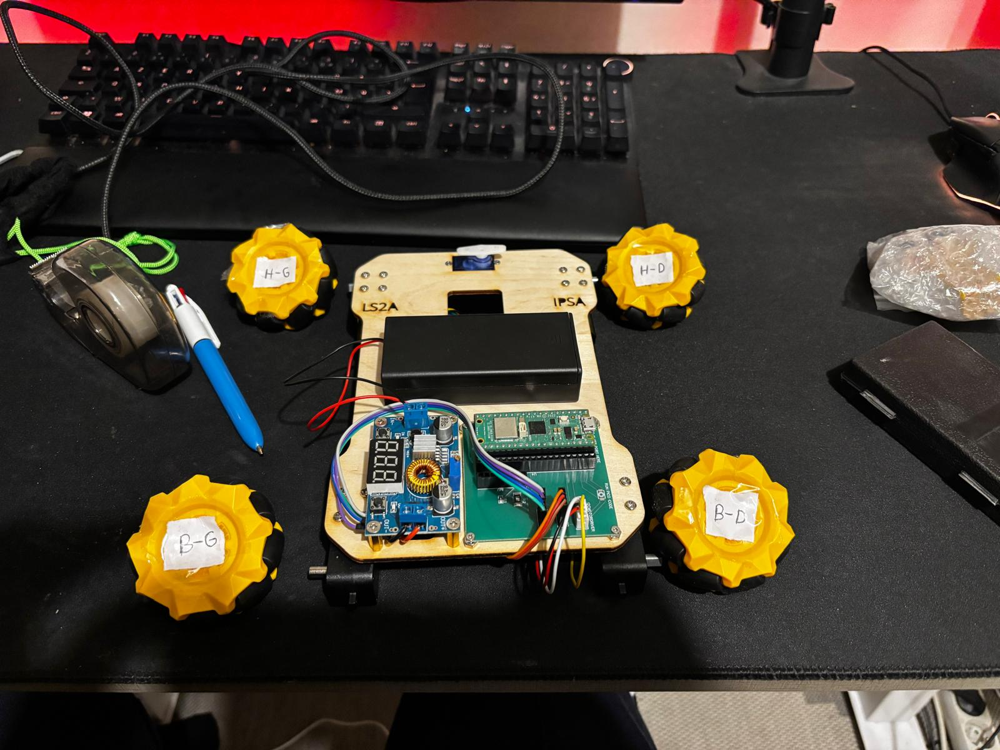

Norauto · Stage
Environnement automobile et expérience professionnelle concrète, reliant mes études d'ingénierie aux systèmes physiques réels.
ÉTUDIANT INGÉNIEUR · IPSA · INGÉ 3
Du code qui doit fonctionner sur du matériel réel.
Je me spécialise dans les systèmes embarqués, l'électronique et la robotique , avec un intérêt pour les applications aéronautiques et industrielles. J'aime les projets où le logiciel interagit avec le monde physique : capteurs, moteurs, commande, communication et matériel.
Étudiant ingénieur intéressé par l'interface entre logiciel et systèmes physiques.
Je suis étudiant en troisième année d'ingénierie à l'IPSA, où je construis un profil orienté systèmes embarqués, électronique, robotique et commande.
La programmation me sert surtout à faire réaliser au matériel des actions mesurables. J'aime comprendre le système dans son ensemble : communication, électronique, logiciel, moteurs, capteurs et comportement physique.
Je m'intéresse particulièrement à l'aéronautique et aux systèmes spatiaux, ainsi qu'aux systèmes industriels et à la robotique.
Une sélection de travaux académiques et personnels pour montrer mon approche des problèmes techniques concrets.
À LA UNE · EMBARQUÉ / ROBOTIQUE
Un rover équipé d'un Raspberry Pi Pico et commandé depuis un PC en Wi-Fi. Le projet combine programmation embarquée, communication, commande des moteurs et visualisation de trajectoire.
| Interface | Application de commande sur PC |
| Réseau | Communication Wi-Fi locale |
| Embarqué | MicroPython + bibliothèque IPSA Rover |
| Sortie | Commandes moteurs + tracé de trajectoire |
| Orientation | Étalonnage, communication et tests |
Images et essais réels du système mobile en fonctionnement.

Un ensemble de compétences pratiques développé grâce aux cours et projets d'ingénierie.
L'orientation que je souhaite approfondir.
Le code utilisé comme outil d'ingénierie.
Le contexte physique autour du logiciel.
Des bases scientifiques à l'informatique physique et aux systèmes aéronautiques.
Étudiant en troisième année dans un cursus orienté aéronautique, avec un approfondissement continu en programmation, électronique et systèmes.
Expérience internationale d'ingénierie en Indonésie, avec des cours d'électronique industrielle, robotique, systèmes embarqués et de commande, IoT et apprentissage automatique.
Je recherche un stage d'ingénierie de trois mois pour l'été 2027 et une alternance à partir de septembre 2027.
Expériences professionnelles en parallèle de mes études d'ingénierie.
Environnement automobile et expérience professionnelle concrète, reliant mes études d'ingénierie aux systèmes physiques réels.
Travail à temps partiel au contact des clients, développé en parallèle de mes études et renforçant fiabilité, organisation et communication professionnelle.
Le type d'environnement d'ingénierie que je souhaite rejoindre.
Systèmes embarqués, électronique, robotique, commande, avionique, aéronautique ou systèmes industriels.
Un poste d'ingénierie à long terme où contribuer à des systèmes physiques tout en poursuivant mes études à l'IPSA.
Particulièrement intéressé par Lyon, Grenoble, Chambéry, Toulouse et Paris, ainsi que par les opportunités pertinentes à l'étranger.
Je recherche un environnement où apprendre auprès d'ingénieurs expérimentés et prendre en charge des missions techniques concrètes.
Mes activités en dehors des cours influencent aussi ma manière d'aborder les défis.
Training and cardio help me stay disciplined and comfortable with long-term goals.
J'aime les randonnées exigeantes et les environnements montagneux, surtout lorsqu'un objectif concret est à atteindre.
Les expériences internationales m'apprennent à m'adapter rapidement, à découvrir de nouveaux environnements et à rester curieux.
Intéressé par un stage, une alternance ou un projet d'ingénierie ? Échangeons.

CONTACT DIRECT
Pour un recruteur, les moyens les plus rapides sont LinkedIn, GitHub ou mon CV.
E-MAIL : mokeddem541@gmail.com